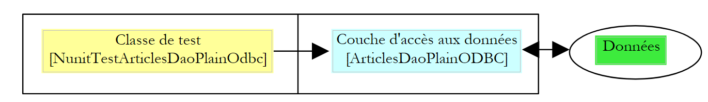

2. تكوين تطبيق باستخدام Spring
لنتأمل تطبيقًا كلاسيكيًا ثلاثي الطبقات:
 |
سنفترض أن الوصول إلى طبقة DAO يتم التحكم فيه بواسطة واجهة [IArticlesDao]:
....
Namespace istia.st.articles.dao
Public Interface IArticlesDao
' list of all items
Function getAllArticles() As IList
' add an article
Function ajouteArticle(ByVal unArticle As Article) As Integer
' deletes an article
Function supprimeArticle(ByVal idArticle As Integer) As Integer
' modify an article
Function modifieArticle(ByVal unArticle As Article) As Integer
' search for an article
Function getArticleById(ByVal idArticle As Integer) As Article
' deletes all articles
Sub clearAllArticles()
' inserts items within a transaction
Sub doInsertionsInTransaction(ByVal articles As Article())
' changes the stock of an item
Function changerStockArticle(ByVal idArticle As Integer, ByVal mouvement As Integer) As Integer
End Interface
End Namespace
End Namespace
في طبقة الوصول إلى البيانات أو طبقة DAO (كائن الوصول إلى البيانات)، من الشائع العمل مع نظام إدارة قواعد البيانات (DBMS). لنفترض حالة الوصول إليه عبر برنامج تشغيل ODBC. قد يكون الهيكل الأساسي لفئة تصل إلى مصدر ODBC هذا كما يلي:
NameSpace istia.st.articles.dao
Imports System.Data.Odbc
...
Public Class ArticlesDaoPlainODBC
Implements istia.st.articles.dao.IArticlesDao
' private fields
Private connexion As OdbcConnection = Nothing
Private DSN As String
Public Sub New(ByVal DSN As String, ByVal user As String, ByVal passwd As String)
'retrieve the source name ODBC
Me.DSN = DSN
' we create the connection string
Dim connectString As String = String.Format("DSN={0};UID={1};PWD={2}", DSN, user, passwd)
'we instantiate the connection
connexion = New OdbcConnection(connectString)
End Sub
....
End Class
End NameSpace
لإجراء عملية على مصدر ODBC، تتطلب كل طريقة كائن [OdbcConnection] يمثل الاتصال بقاعدة البيانات الذي سيتم من خلاله تبادل البيانات بين قاعدة البيانات والتطبيق. لإنشاء هذا الكائن، يلزم توفر ثلاث معلومات:
اسم مصدر ODBC | |
اسم المستخدم المستخدم لتسجيل الدخول | |
كلمة المرور المرتبطة بهذه الهوية |
تحصل فئة [ArticlesDaoPlainODBC] الخاصة بنا على هذه المعلومات عبر الوكيل الخارجي الذي يقوم بإنشاء مثيل للفئة. قد يتساءل المرء عن كيفية حصول الوكيل على المعلومات الثلاث المطلوبة لإنشاء مثيل لفئة [ArticlesDaoPlainODBC]. لنأخذ مثالاً على ذلك. لنفترض أننا نريد كتابة فئة اختبار لطبقة [Dao]. سيكون لدينا البنية التالية:
 |
قد يبدو الهيكل الأساسي لفئة اختبار NUnit [http://www.nunit.org/] كما يلي:
Imports System
Imports System.Collections
Imports NUnit.Framework
Imports istia.st.articles.dao
Imports ArticlesDaoSqlmap = istia.st.articles.dao.ArticlesDaoSqlMap
Imports Article = istia.st.articles.domain.Article
Imports System.Threading
<TestFixture()> _
Public Class NunitTestArticlesDaoPlainOdbc
' the test object
Private articlesDao As IArticlesDao
<SetUp()> _
Public Sub init()
' create an instance of the object to be tested
articlesDao = New ArticlesDaoPlainODBC("odbc-firebird-articles", "SYSDBA", "masterkey")
End Sub
<Test()> _
Public Sub testGetAllArticles()
' visual check
listArticles()
End Sub
' screen listing
Private Sub listArticles()
Dim articles As IList = articlesDao.getAllArticles
For i As Integer = 0 To articles.Count - 1
Console.WriteLine(CType(articles(i), Article).ToString)
Next
End Sub
End Class
إطار عمل الاختبار NUnit هو نسخة مقتبسة لمنصة .NET من إطار عمل JUnit الموجود لمنصة Java. في الفئة أعلاه، يتم تنفيذ الأسلوب الذي يحمل السمة <SetUp()> قبل كل أسلوب اختبار. أما الأسلوب الذي يحمل السمة <TearDown()> فيتم تنفيذه بعد كل اختبار. لا يوجد أي منها في المثال أعلاه. هنا، نرى أن الطريقة [init]، التي تحتوي على السمة <SetUp()>، تقوم بإنشاء مثيل لكائن [ArticlesDaoPlainODBC] عن طريق الترميز الثابت للمعلومات الثلاث التي يتطلبها منشئ الكائن.
فئة الاختبار لدينا معرضة للتأثر بأي تغييرات في القيم المبرمجة بشكل ثابت. من الأفضل تخزين هذه القيم في ملف تكوين لتجنب عمليات إعادة التجميع غير الضرورية عند تغييرها. النهج القياسي لتكوين التطبيق هو استخدام ملف يحتوي على جميع المعلومات التي من المحتمل أن تتغير بمرور الوقت. هناك مجموعة متنوعة من ملفات التكوين المتاحة. الاتجاه الحالي هو استخدام ملفات XML. هذا هو الخيار الذي اختارته Spring. قد يبدو الملف الذي يقوم بتكوين كائن [ArticlesDaoPlainODBC] كما يلي:
<?xml version="1.0" encoding="iso-8859-1" ?>
<!DOCTYPE objects PUBLIC "-//SPRING//DTD OBJECT//EN"
"http://www.springframework.net/dtd/spring-objects.dtd">
<objects>
<!-- the IArticlesDao interface implementation class -->
<description>Gestion d'une table d'articles</description>
<object id="articlesdao" type="istia.st.articles.dao.ArticlesDaoPlainODBC, articlesdao">
<constructor-arg index="0">
<value>odbc-firebird-articles</value>
</constructor-arg>
<constructor-arg index="1">
<value>SYSDBA</value>
</constructor-arg>
<constructor-arg index="2">
<value>masterkey</value>
</constructor-arg>
</object>
</objects>
يصف ملف تكوين Spring الكائنات التي سيتم إنشاء مثيلات لها. ولا يحدد الملف عمومًا متى سيتم إنشاء هذه المثيلات. وبالتالي، يتم تحديد توقيت إنشاء المثيلات بواسطة الكود الذي يستخدم هذا الملف. يمكن إنشاء مثيلات الكائنات الموصوفة في ملف تكوين Spring وتهيئتها بطريقتين مختلفتين:
- عن طريق تحديد المعلمات التي سيتم تمريرها إلى منشئ الكائن، كما هو موضح أعلاه
- عن طريق توفير قيم لخصائص الكائن. في هذه الحالة، يجب أن يكون للكائن منشئ افتراضي يستخدمه Spring لإنشاء المثيل.
غالبًا ما يتم إنشاء الكائنات في التطبيق التي تتمثل مهمتها في توفير خدمة كمثيل واحد. وتسمى هذه الكائنات singletons. وبالتالي، في مثال التطبيق متعدد المستويات المقدم في بداية هذا المستند، سيتم التعامل مع الوصول إلى قاعدة بيانات المنتجات بواسطة مثيل واحد من فئة [ArticlesDaoPlainODBC]. في تطبيق الويب، تخدم كائنات الخدمة هذه عدة عملاء في وقت واحد. ولا نقوم بإنشاء كائن خدمة لكل عميل.
يسمح لك ملف تكوين Spring أعلاه بإنشاء كائن خدمة واحد من النوع [ArticlesDaoPlainODBC] في حزمة تسمى [istia.st.articles.dao]. يتم تعريف المعلومات الثلاث المطلوبة من قبل منشئ هذا الكائن داخل علامة <object>...</object>. سيكون هناك عدد من علامات <object> يساوي عدد الكائنات الفردية المراد إنشاؤها.
دعونا نحلل التكوين:
<objects> هي العلامة الجذرية لملف تكوين Spring. وهي تحدد وصف الكائنات الفردية التي سيتم إنشاء مثيلاتها.
العلامة <description> اختيارية. ويمكن استخدامها، على سبيل المثال، لوصف الغرض من ملف التكوين.
<object id="articlesdao" type="istia.st.articles.dao.ArticlesDaoPlainODBC, articlesdao">
...
</object>
تُستخدم علامة <object> لوصف كائن سيتم إنشاء مثيل له. ولها هنا خاصيتان:
- name: معرف الكائن. سيشير الكود الخارجي إلى الكائن باستخدام هذا الاسم.
- class: في صيغة "اسم الفئة، اسم التجميع". الجزء الأول هو الاسم الكامل للفئة المراد إنشاء مثيل لها. الجزء الثاني هو اسم ملف DLL الذي يحتوي على هذه الفئة. في مثالنا، توجد الفئة في ملف باسم [articlesdao.dll]
يُستخدم محتوى علامة <object> لوصف كيفية إنشاء مثيل الكائن:
<object id="articlesdao" type="istia.st.articles.dao.ArticlesDaoPlainODBC, articlesdao">
<constructor-arg index="0">
<value>odbc-firebird-articles</value>
</constructor-arg>
<constructor-arg index="1">
<value>SYSDBA</value>
</constructor-arg>
<constructor-arg index="2">
<value>masterkey</value>
</constructor-arg>
</object>
دعونا نراجع توقيع منشئ الفئة [ArticlesDaoPlainODBC]:
سيتم إنشاء مثيل لكائن Spring [articlesdao] بواسطة المنشئ أعلاه باستخدام المعلومات الثلاثة الموجودة في ملف التكوين: [odbc-firebird-articles، SYSDBA، masterkey].
متى سيتم إنشاء الكائنات المحددة في ملف Spring؟ يحتوي كل تطبيق على طريقة يضمن أنها ستكون أول ما يتم تنفيذه. وعادةً ما يتم طلب إنشاء الكائنات الفردية في هذه الطريقة. يمكن معالجة تهيئة التطبيق بواسطة طريقة main الخاصة بالتطبيق، إذا كان يحتوي على واحدة. بالنسبة لتطبيق ASP.NET، قد تكون هذه هي الطريقة [**Application\_Start**] في ملف [**global.asax**]. بالنسبة لفئة الاختبار [Nunit] الخاصة بنا، تحدث تهيئة التطبيق في الطريقة المرتبطة بالسمة `<Setup()``.
كيف نستخدم ملف التكوين أعلاه في فئة [Nunit] الخاصة بنا؟ إليك مثال:
Imports System
Imports System.Collections
Imports NUnit.Framework
Imports istia.st.articles.dao
Imports ArticlesDaoSqlmap = istia.st.articles.dao.ArticlesDaoSqlMap
Imports Article = istia.st.articles.domain.Article
Imports System.Threading
Imports Spring.Objects.Factory.Xml
Imports System.IO
<TestFixture()> _
Public Class NunitSpringTestArticlesDaoPlainOdbc
' the test object
Private articlesDao As IArticlesDao
<SetUp()> _
Public Sub init()
' retrieve an instance of the Spring object manufacturer
Dim factory As XmlObjectFactory = New XmlObjectFactory(New FileStream("spring-config-plainodbc.xml", FileMode.Open))
' request instantiation of the articles dao object
articlesDao = CType(factory.GetObject("articlesdao"), IArticlesDao)
End Sub
<Test()> _
Public Sub testGetAllArticles()
' visual check
listArticles()
End Sub
' screen listing
Private Sub listArticles()
Dim articles As IList = articlesDao.getAllArticles
For i As Integer = 0 To articles.Count - 1
Console.WriteLine(CType(articles(i), Article).ToString)
Next
End Sub
End Class
تعليقات:
- لإنشاء مثيلات للكائنات من ملف تكوين Spring، نستخدم كائنًا من النوع [XmlObjectFactory]. هذا كائن "Factory"، أي كائن يُستخدم لإنشاء كائنات أخرى (Factory = مصنع). يوفر Spring عدة أنواع من "Factory" اعتمادًا على ملف التكوين المستخدم. هنا، الملف هو ملف XML، لذا نستخدم النوع [XmlObjectFactory].
- من المنطقي تمامًا أن كائن [XmlObjectFactory] يتطلب اسم ملف تكوين XML، وهو في هذه الحالة [spring-config-plainodbc.xml]. وبشكل أكثر دقة، يتم إنشاء مثيل من النوع [XmlObjectFactory] باستخدام دفق قراءة تم إنشاؤه من ملف XML الذي تم توفير اسمه.
- بمجرد إنشاء كائن [XmlObjectFactory]، يتم الحصول على كائن من ملف التكوين عبر [XmlObjectFactory].getObject("identifier")، حيث "identifier" هو السمة [id] لأحد الكائنات في ملف التكوين.
- إذا لم يكن الكائن المطلوب قد تم إنشاء مثيل له بعد، فإن Spring تقوم بإنشاء مثيل له باستخدام المعلومات الموجودة في ملف التكوين الخاص به، ثم تعيد مرجعًا إليه إلى البرنامج المستدعي. أما إذا كان الكائن قد تم إنشاء مثيل له بالفعل، فإن Spring تعيد ببساطة المرجع إلى الكائن الموجود. وهذا هو مبدأ الكائن الفريد (singleton).
- لاحظ أن فئة الاختبار [Nunit] لا تعرف اسم فئة الوصول إلى البيانات. يوجد هذا الاسم في ملف التكوين. تطلب فئة الاختبار ببساطة كائنًا ينفذ واجهة [IArticlesDao]:
' the test object
Private articlesDao As IArticlesDao
<SetUp()> _
Public Sub init()
...
articlesDao = CType(factory.GetObject("articlesdao"), IArticlesDao)
End Sub
هذا هو جوهر Spring. إذا قمنا بتغيير فئة التنفيذ، فلن نحتاج إلى تغيير فئة الاختبار. سنقوم ببساطة بتعديل ملف تكوين Spring. أما فئة الاختبار، فهي تعمل ببساطة مع واجهة بدلاً من فئة.
لنختتم هذا العرض ببعض النقاط العملية.
عندما نكتب "Spring سيقوم بإنشاء مثيل..."، ماذا نعني بالضبط؟ بالنسبة لمنصة .NET، يتضمن Spring ثلاثة ملفات:

بالنسبة لمشروع .NET تم إنشاؤه باستخدام Visual Studio ويحتاج إلى استخدام Spring، اتبع الخطوات التالية:
- سيتم وضع الملفات الثلاثة المذكورة أعلاه في مجلد [bin] الخاص بالمشروع
- يجب تضمين [Spring.Core.dll] في مراجع المشروع:

- ويجب أن تستورد الفئات التي تستخدم Spring مساحات أسماء معينة، غالبًا ما تشمل ما يلي:
نقطة عملية أخرى: أين تضع ملف تكوين Spring؟ هناك عدة مواقع محتملة. أحدها هو مجلد [bin] الخاص بالمشروع. هذا هو المكان الذي تم فيه وضع ملف [spring-config-plainodbc.xml] من المثال.